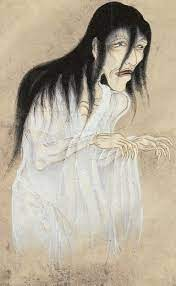
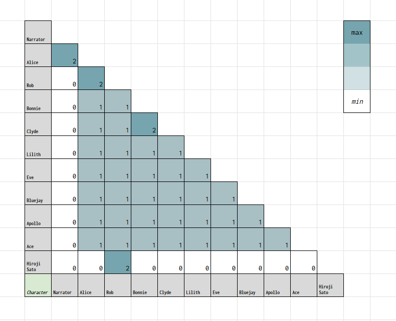
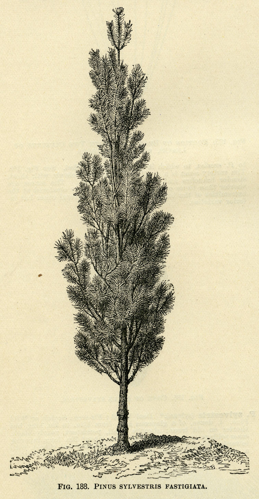
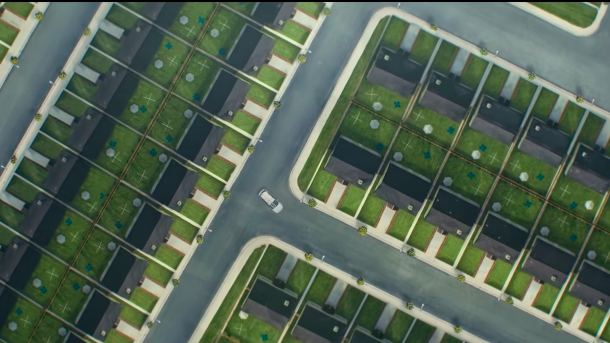
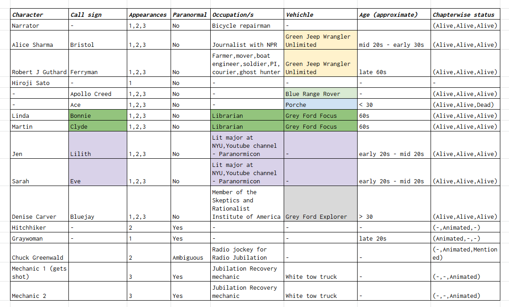

Project 1 : Conceptual Mapping
ENG-3340/ CS-2209-1: Fuzzy Cartographies
Instructor: Joost Burgers
TA: Sonal Rana
Alice Gridlocked
Submission by Shweta Prasad
Introduction
Has anyone heard of the Left/Right game? first appeared on the subreddit Creepypasta: A portmanteau of creepy and copy-pasted; These are creepy urban legends that float on the internet in various forms: they can be articles, recounted experience, found footage, narrated animated stories and so on. r/nosleep is one such forum for horror stories that readers can participate in in various ways. r/nosleep on November 5, 2017. Posted by user NeonTempo (Jack Anderson), the premise of the story is a supernatural game that can be played out anywhere, as long as you have an unlimited number of left and right turns to make on the road.
As a rule, stories on the subreddit are to be consumed as recounted experience: authors go to great lengths to make their tales realistically plausible, and the successful stories elegantly toe the line between plausible reality and the supernatural. Has anyone heard of the Left/Right game? is one of the most upvoted long-form series on the forum (with a total of 10 parts), and takes the form of found-footage or documentary.
The unnamed narrator receives an anonymous email

Yurei are figures in Japanese folklore analogous to the Western model of ghosts. The name consists of two kanji, 幽, meaning "faint" or "dim" and 霊, meaning "soul" or "spirit".
Source: Wikipedia
with no title or body, except for a zipped folder with the first draft of a journalistic document written by Alice Sharma, his friend and former flat-mate from London. Alice and the narrator met at Edinburgh University, and the narrator describes her as someone who could be nothing else but a journalist. She later moves to the USA to work at the National Public Radio, where she receives communication
from Robert J. Guthard regarding a supernatural game that can be played on the road. Rob Guthard is at least 65 years of age, who at the time at which he contacts Alice, is a committed investigator of all things supernatural and urban legend.
A singular encounter with a yurei in Japan's Aokigahara forest puts him on the path he is presently on, and he wants to verify if any of the urban legends floating on internet forums have any substance to them. He is convinced that while most are hoaxes, the Left/Right game is "the real deal".
Robert invites Alice to Phoenix, Arizona to participate and experience the game with him and a convoy of a few others from an online forum. Rob is introduced as sort of a big-shot in the paranormal hunting community; he is deeply committed to his investigation and has already spent years investigating this game, even moving to Phoenix to exploit its grid system that allows him ample left and right turns. He is transparent with his motive to show the world that the game is indeed real. Alice agrees to meet with him at his Phoenix home, and part 1 of the story commences on February 7, 2017.
For this project, I use parts 1-3 of the story, and map out different features of the universe in-game. The game has rules
"The rules of the Left/Right game are simple. Get in your car and take a drive. Take a left, then take the next possible road on the right, then the next possible left. Repeat the process ad infinitum, until you wind up somewhere ... new."
- Part 1
The rules are easy to understand, but hard to follow; The Road presents devious obstacles once you are past a certain threshold.
, flouting which leads to often fatal consequences. In particular, I map out the invariant (paranormal) features of the game and trace how Alice Sharma's perspective on the whole encouter changes in time. More specifically, I map the discernible thresholds within The Road of the game which are linearly arranged (at least till part 3) much like time. Alice goes deeper down the rabbit hole with each threshold she crosses, in terms of where she is physically, and in terms of unfolding plot: Rob is hiding something. The map is thus visualized as a rabbit hole. This is also consistent within the larger plot of the story.
Text Summary
Before we get to the map, here here are part-wise summaries of important events in the story.
Part 1
Alice and Rob meet on Feb 7, 2017 and discuss how Rob got started in this line of work. Alice is briefed on the rules of the game and is told that there will be a convoy of 5 cars and everyone will be using callsigns, Rob christens her Bristol after where she is originally from. The 5 convoys arrive in the following order the next day: Apollo Creed, Bonnie & Clyde, Lilith & Eve, Bluejay, and Ace.For more details on the convoys, refer to Appendix 4.
Rob hands them radios labelled in the same order, the group head out at 9:00 am on Feb 8, 2017 after a breifing from Rob, in the same order. They begin the game by taking the first left

A heatmap of number of places that people in the story have in common before the game commences.
Based on table 1, Places in Appendix 4.
in their way, and then the next right and so on, until they pass a quiet corner near the 34th turn, a right, where they encounter the first supernatural being : the woman in grey (dubbed Greywoman). She screams what sounds like nonsense at everyone, and the whole convoy drive past her. There is a tunnel up ahead, which is a point of no return in the game. The tunnel only appears to players of the game. It is implied that if one wishes to return after crossing the threshold of the tunnel, one will need a vehichle and will need to carefully retrace the path back to it.
Part 2
Everyone has crossed the tunnel, a 2-minute long, dimly lit stretch of road. Rob warns everyone of the first "trap" in their way - a sharp left as soon as the tunnel ends. An uneventful hour and half pass after everyone safely exits the tunnel onto the correct turn, and Rob instructs each convoy to go one by one, in order for the next stretch of about 30 mins, which were 13 turns in total.
They are asked to expect to see a well dressed Hitchhiker with a suitcase on their way and are given strict instruction to pick him up. However, they are not to talk to, or even acknowledge the presence of the Hitchhiker once he gets in. Ace, who already got off on the wrong foot with Rob in part 1, insistently asks why they couldn't simply forego even picking him up, to which an angry Rob responds "Goddamn it, you'll pick him up whether you want to or not!".
Alice and Rob are leading the convoy so they move first.

Pine trees line either side of The Road.
They pick up the Hitchhiker who attempts to make smalltalk, but receives no acknowledgement whatsoever from
Alice or Rob, until Alice gets caught off-guard, almost slipping up and talking to the the Hitchhiker. This is the first time the malevolent nature of the game starts to show itself to the players. Eventually, the Hitchhiker is dropped off and Alice and Rob talk only after the next stop, at which point Rob signals the next vehichle in line to make the journey.
Once past the Hitchhiker, Alice spots a crashed white car in her peripheral vision and asks Rob about it, who gives away more than he intended to although he tried to play it off as a something that occassionally showed up on The Road. Alice is suspicious and makes a note to check up on it; She manages to discretely convince Lilith and Eve (Youtubers running a channel called Paranormicon) to get footage of the car on their turn.
Everyone eventually gets across the 30 min stretch, some faster than others. Lilith and Eve signal to Alice that they did what she asked of them. Everyone has different experiences with the Hitchhiker, some more favourable than others. When Ace arrives, he looks visibly shaken by the encounter. Once everyone gets through, Rob leads them to a clearing a little further away to rest for the night. Alice works on trascribing her audio evidence and organizes her notes into the document we are currently reading. As she works into the night, she turns on the radio and tunes into a station called Radio Jubilation, from a nearby town. The RJ is Chuck Greenwald and everything is okay untiil all of a sudden, he announces that "They're going to hurt now" and begins to broadcast bone rending screams of hundreds of people. It stops as abruptly as it started, Alice is shaken. Something is wrong, and she hopes that Rob is a fraud; that the game is a hoax.
Part 3
The group get ready to head out the next morning, after breakfast. It's Feb 9, 2017, and day 2 on The Road. Eve and Lilith discuss with Alice what they find at the scene of the crash: a scene of decripitutde, blood stains from years ago, and a boot load of plastic explosives without their detonator. The duo were not asked to get out of their car, but they did inorder to get footage and other evidence. They bring back the explosives haul, and Alice is flabbergasted at their audacity.
Before they head out on The Road , Ace reveals that he did not stop to pick up the Hitchhiker, but the man was already in the backseat. Rob explains that the entity gets in the vehichle regardless of whether they stop to pick him up or not, and it was better to not antagonize him by not stopping. He recounts that the same thing had happened to him a few runs of the game ago, and epmathizes with Ace. After resolving this, they head out in the same order as the last day.
A sense of foreboding

Cookie-cutter neighbourhoods are nightmarish in their own right.
begins to set in as Alice realizes that they will be heading through the town of Jubilation next. She asks Rob about Chuck Greenwald, but Rob doesn't think the town poses any danger although weird things did happen from time to time.
They arrive in Jubilation, and pass through its deserted roads, albeit spick and span, and vibrant. They drive through Sycamore Row, a residential area, where they notice that every house is identical and except for the slight variation in food consumed, every house had a family of four and every family was at their dinner table, disturbingly happy.
Alice feels a sense of claustrophobia as she sees more of the same, a mockery of life in urban and planned neighbourhoods. They turn out of Sycamore Row into Acer Road, on their way out of the town of Jubilation, only to notice a similar scene, with slight and disturbing differences between the two avenues. Everyone feels relief at exiting Jubilation,
and Bonnie gets on the radio to mention that she thought it was nice, almost like a place called Wintery Bay (which no one, including Clyde, had heard of). The mention of the place is ignored, as all of a sudden, the road presents an obstacle that almost kills Rob and Alice. A pine tree falls onto the road, and the convoy are forced to go around it, traveling temporarily on the trail beside the asphalt.
Everyone notices a white tow truck

A table summarizing what we know about characters thus far.
Based on Characters in Appendix 4.
Please zoom in to read.
speeding towards the convoy as they cross one by one to the other side. It's a truck from Jubilation Recovery, and everyone panics. Rob sends everyone ahead as he waits to make sure everyone gets across; Ace's Porsche being unsuitable to offroading, gets stuck, and the truck and its two Mechanics catches up to him, crashing into his car. The truck is undented, but the Porsche is severely damaged.
Rob tries to deter them by shooting at them, but bullet wounds don't seem to affect them in the slightest, as the continue to drag Ace out towards the truck while bleeding onto the road themselves. Ace is impaled by his jaw onto a hook on the truck, and dragged away by the Mechanics, back to Jubilation.
Alice and Rob leave.
Alice in Thresholds
Explained
The map above is primarily a representation of Alice's feelings towards the supernatural, as she goes deeper and deeper down the game crossing several thresholds along the way. The greens represent her comfort with the idea of the supernatural: coming from a rational viewpoint relying on scientific evidence, Alice is not threatened by what she does not understand, as at this point, she believes anything can be explained by studying it enough. As time progresses, she is less sure of what rationality informs her and equips her with in the situation she is in, with the yellows representing her staying in a state of optimistic and hopeful denial, where she hopes this is all a well planned hoax.
The colours within the tubes representing each threshold Refer to Alice in Thresholds, Appendix 4 for further details. also represent the direct danger to the lives of the players of the game. As mentioned in the introduction, the above map is meant to invoke the idea that Alice is traversing a rabbit-hole, where the cross section of the cylinders representing each threshold can be thought of as a circular maze.
The horizontal axis here represents time in days. There are two vertical axes, and the tubes are in proportion to the ticks in the red axis - the magnitude of opposition that The Road seems to be presenting. The blue axis represents how The Road also nurtures the people playing, which is an insight that comes in from later chapters of the story, which are outside the scope of this exploration but are still relevant to this map, as it shows a sense of balance. The ticks on both the red and blue axes represent the growth function of either feature of interest. Thus, one can infer that the nourishment provided by the road is currently at its lag phase. A balance between how The Road pushes against you and pulls you in is important to how players sustain inside the game. Events such as the eerie invitation on the radio, at the same time the "bone rending" screams broadcast in the same block of time by Chuck Greenwald, is an example of what I mean by this. The trip through Jubilation also supports the view that The Road is pulling you in with its unsettling mockery of cookie cutter urban life, while still punishing you for breaking rules - as with Ace.
As you will notice, part 3 does not cover the ending of day 3, which is more extensively covered in part 4. As a result, the graph also does not go past day 3.
Using this method in the future
The method used here relies heavily on the mention of temporal features or landmarks that help infer the time that has passed inside the text. This way of mapping a text can be extended to texts such as journals, documentaries and so on, which have a strict sense of a direction of time. It stands to benefit from more explicitly mentioned time-stamps, but that is its major drawback too, that most texts only allow you to infer the passage of time. Another thing to note is that while the game gives you a sense of traversing a grid, in any infinite grid system, the eventual displacement is along a diagonal direction as long as you alternate left and right.
I am unable to see this method being applicable in any kind of document other than some form of a dated journal.
Appendices
- Appendix 1: Read part 1
- Appendix 2: Read part 2
- Appendix 3: Read part 3
- Appendix 4: Sheets tracking various details in the story